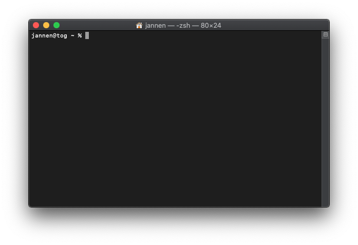
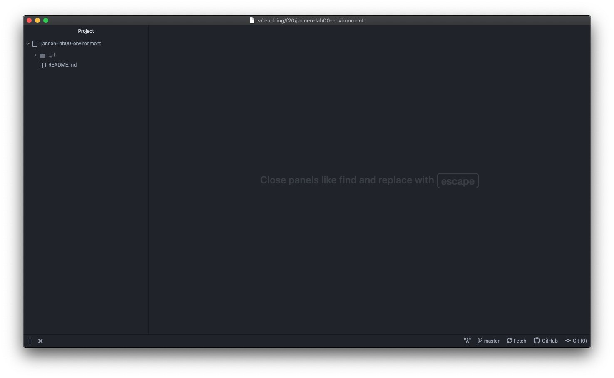
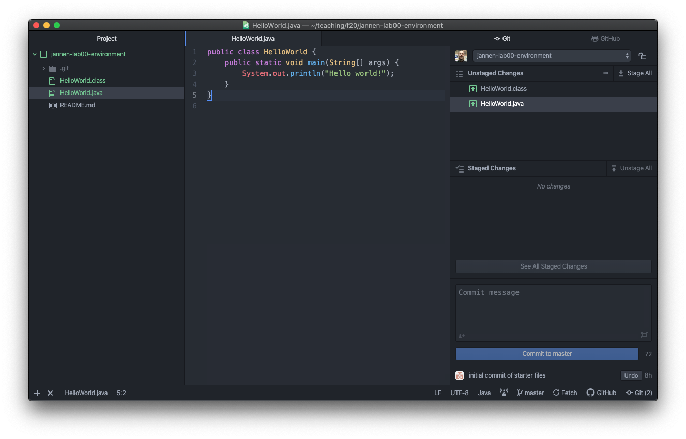
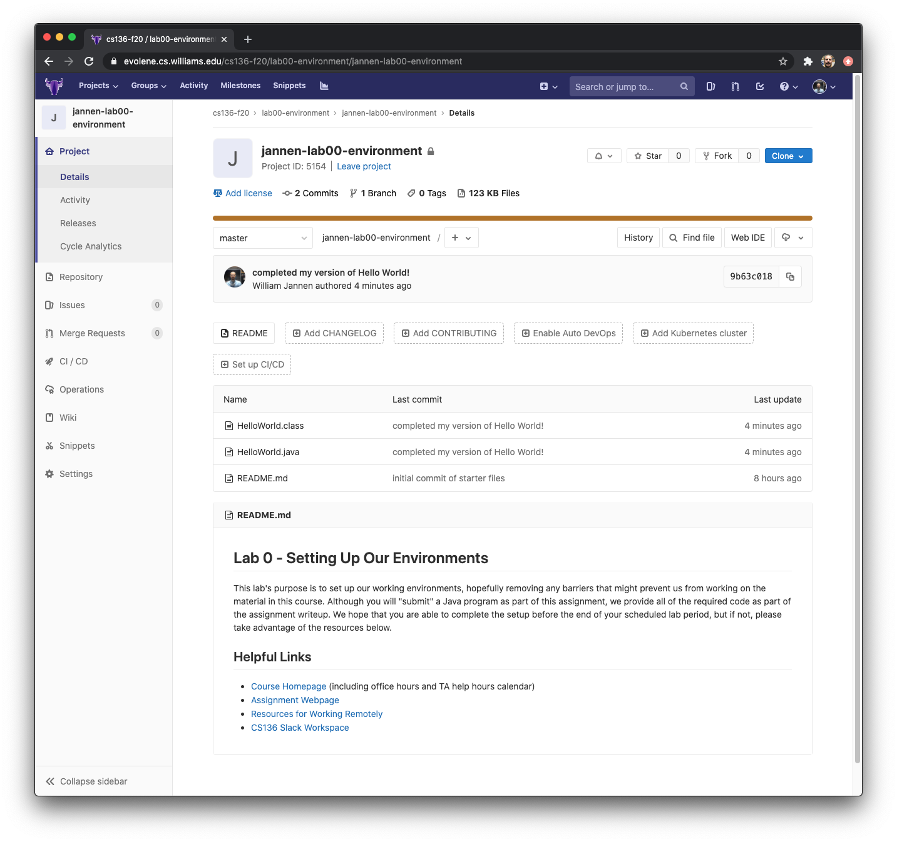

CSCI 136 :: Spring 2021
Data Structures & Advanced Programming
Home | Schedule | Labs | Handouts | Links | CS@Williams
This lab introduces us to some of the tools, techniques, and workflows
that we will be using throughout this course; we adapted these workflows
from “industry best-practices”. This lab handout walks through all of the
steps that we will take in a typical week when acquiring lab starter code,
submitting completed lab assignments, and receiving lab feedback.
The skills developed in this lab will help us on multiple fronts. The
tools that we explore (e.g., the Atom text editor, a command line terminal, etc.)
and the workflow we use (checkpointing our progress using the
git version control system) will help us to work efficiently,
safely, and flexibly throughout the semester.
However, before we can begin our workflow, we need to prepare
our computers with some important software so we can do things
like to create, compile, and run Java programs.
Note that we have biased our instructions for Unix-like operating
systems. MacOS and Linux are two examples of Unix-like operating systems,
and since we normally use MacOS in our CS136 computing lab, the
instructions often use MacOS as an example. If you have a different
operating system, like Windows, that is OK! The steps are just slightly
different, so read carefully.
Step 1: Install a Text Editor
During a typical semester, you would have 24-hour in-person access to lab machines with all software pre-installed and configured. However, as computer science students, we should become comfortable with installing software ourselves. Let’s begin making our personal computers our own!
There are many editors that were designed for writing code. These so-called “text editors” are very different than word processing software like Microsoft Office. There are very basic “terminal editors”, like emacs or vim, that have the look and feel of the environments that 80’s movie hackers would work in (a small black window with even smaller green text). There are also sophisticated “Integrated Development Environments”, like Eclipse, that automate some non-obvious programming tasks, but that also require extensive configuration. For this course, you will use Atom, a text editor that falls somewhere in the middle of this taxonomy. Atom provides all of the features of a modern code editor, and some useful integrations with tools that will help us in this course. As instructors, we will be using Atom, and we encourage you to do the same.
Please download and install Atom on your personal computing device. We highly recommend that you also install the teletype package. Teletype will let us more easily "pair program". We plan to use teletype extensively in later labs; installing it now will help us stay ahead.
Step 2: Install Git
Developing a piece of software typically requires a number of rounds of entering code, testing, debugging, and rewriting, and the code changes quite a bit over time. Frequently, it is desireable or necessary to go back to an earlier version of your project code. Version control systems are pieces of software that allow programmers to maintain snapshots (copies) of their code at various stages of its development--this can be a life-saver!
In this course we will be using the Git version control system. Git is one of many version control systems; it is important to know what a version control system is and why you might want to use one. We encourage you to explore the links in this paragraph to learn more about version control.
Installing Git can be straightforward, but there are a few steps to configure it to work exactly the way you want. Luckily, we can use Atom’s Git integration for most of our Git needs! To install git, follow the directions in the link above for your operating system.
Further Git Installation Notes for Windows Users
Among the many dialog boxes you will click through during this installation, you should accept the default suggested for all but two.
vim (it is likely not
installed on your machine and it is a difficult editor to learn); instead
choose Atom.Step 3: Install Java
In this step, you will install Java on your own computer, if you haven’t already. (Note: There are many ways to install Java, even within the same operating system (macOS, Microsoft Windows, Linux, etc.), so if you know of another way to install Java you should feel free to try it.)
We want to install the "Java Development Kit", or JDK. If you click on the Installation Instructions link, it will take you to a page that explains how to install Java on three different platforms (Windows, Linux, and macOS). The instructions aren't exactly concise, so you may want to jump to the JDK Downloads page and select the appropriate download for your system: "macOS Installer" if on macOS, or Windows x64 installer if on Windows 10. Then, double click the downloaded file and follow the installation instructions it gives (or go back to the instructions in the previous link as a reference).
Further Java Installation Notes for Windows Users
After you have installed java, you should check that the
operating system can find it. To do so, open the Git Bash app
that should have been installed as part of your git installation above. You
can do this by typing bash into the search text box next to the
Windows Start icon. Then type javac --version. This should give
you some information about the version of java you have installed. If it
does, you’re ready to move on to Step 4 below!
If, instead, typing javac --version gives you
an error message, you will need to edit one of what the operating system
calls the system environment variables. The one you want to edit is
called the Path variable. To do this, type env in
the search text box beside the Start icon and select Edit the system
environment variables. A dialog box appears. In the
Advanced tab, select Environment Variables....
Another dialog box appears. Under System variables select the
line that says Path then select Edit.... A dialog
box appears. It will contain a text area with a list of directories.
Double-click in the text area below the last item in the list. Here
you will enter the location in which the java commands have been stored. It
will have the form:
C:\Program Files\Java\jdk-VERSION
where VERSION is the version number of your java installation. For example, it might be
C:\Program Files\Java\jdk-15.0.2
To find the version number, type javac --version in your terminal window.
Step 4: Get Your Repository
Each of us has been given our own private repository on
the CS department GitLab infrastructure. Your repository for each lab this
semester will be named based on a combination of the course
(cs136), the semester (s21), your username (on the
CS department infrastructure, e.g., 22abc1), and the
assignment (e.g., environment). For this lab, your repository
take the form of:
https://evolene.cs.williams.edu/cs136-s21/lab00-environment/<YOUR_USERNAME>-lab00-environment.git
The part of the path above
<YOUR_USERNAME> will be replaced by your username, so
if your username was 22abc1, your repository would be
accessed at:
https://evolene.cs.williams.edu/cs136-s21/lab00-environment/22abc1-lab00-environment.git
We will use the git version control system to retrieve this repository from the CS department servers, and clone it to your local computer. This creates a local copy of your repository that has its own independent timeline.
To start, open a command-line terminal on your local machine.
Terminal.app. You can find Terminal.app in the
Utilities folder inside the Applications
directory. (Alternatively, you could use “Spotlight Search” by holding
“⌘” and pressing the space bar. If you start typing “Terminal” in the
Spotlight Search, you can select Terminal.app from a short
list of options.) Once you’ve opened Terminal.app, the
app’s icon should appear on the “Dock”; we suggest you right click the
icon (ctrl-click if you don’t have a mouse), go to the “Options” menu
item, and then select “Keep in Dock”, because we will be using the
terminal repeatedly throughout the course.
Command Prompt and others, but use Git Bash, as it
uses a similar command syntax as Unix-based terminals, and that is the
syntax we will use an any descriptions of terminal interactions.
It isn’t a stretch to say that the terminal is among the
most important applications for programmers, so any investment you make in
order to familiarize your self with the terminal will surely pay off. As
far as we are aware, the functionality of Git Bash and
Terminal.app are comparable for the things we will be doing in
this course, but be aware that there are subtle differences that may come
in with more advanced usage.
At this point, you've successfully opened the terminal on Windows or macOS, and you should see a "prompt" where text will appear when you start typing. The prompt may take different formats depending on your settings. Ours looks like this, but don’t worry if yours looks a little different:

As a convention, we’ll use the dollar sign
($) to signify the prompt in our examples throughout this
course. So when you see instructions like the following,
$ ls
it means that at the prompt, you should type the command
ls. When I type ls and press Enter,
I see:
$ ls
Desktop Documents Library Music notes.txt Pictures
This output means that there are files called
Desktop, Documents, etc. in my current working
directory. Terminal commands are often run on files in your file system,
so when you open a terminal, by default, it assumes that you want to work
with files in your home folder. Therefore, your default current
working directory is usually your home folder. The files shown above
are the ones in my home folder. ls is short for “list”, so we
usually call its output a directory listing.
You might recognize that some of the files in the directory
listing above are, themselves, directories. How can you tell the
difference? Try running ls with some extra
arguments (phonetically, you will type "ell ess minus ell"):
$ ls -l
total 8
drwxr-xr-x 2 cs136 staff 64 Jan 25 13:11 Desktop
drwxr-xr-x 2 cs136 staff 64 Jan 25 13:11 Documents
drwxr-xr-x 2 cs136 staff 64 Jan 25 13:11 Library
drwxr-xr-x 2 cs136 staff 64 Jan 25 13:11 Music
-rw-r--r-- 1 cs136 staff 235 Jan 25 13:19 notes.txt
drwxr-xr-x 2 cs136 staff 64 Jan 25 13:11 Pictures
See the cryptic text all the way to the left? It looks
like drwxr-xr-x. If that text starts with a d,
the entry in the listing is a directory. If it starts with a
dash, -, like -rw-r--r--, then the entry is an
ordinary file. So here, you can see that notes.txt is a
regular file.
Now that we've explored our home directory and a few terminal commands, we would like to clone our repository, which creates a copy of our repository on our local computer. Before we use git to get a copy of our lab, we will do a final one-time setup for git (replacing the capitals with appropriate values, of course):
git config --global user.name 'YOUR NAME'
git config --global user.email 'YOUR-EMAIL@williams.edu'
git config --global push.default simple
git config --global core.editor "atom --wait"
(If you are a Windows user, you will also need to execute one more line, in addition to those above:
git config --global http.sslbackend schannel)
You should only ever need to do this git setup once.
I like to keep all of my
files organized by course, so I would like all of my CS136 repositories
for my labs this semester to be kept in the same directory. I can create a
new directory for this purpose using the mkdir command as
follows:
$ mkdir cs136
This creates a new directory called cs136
inside my current working directory. If I type ls -l, I should
now see cs136 in the directory listing:
$ ls -l
total 9
drwxr-xr-x 2 cs136 staff 64 Sep 04 13:11 cs136
drwxr-xr-x 2 cs136 staff 64 Jan 25 13:11 Desktop
drwxr-xr-x 2 cs136 staff 64 Jan 25 13:11 Documents
drwxr-xr-x 2 cs136 staff 64 Jan 25 13:11 Library
drwxr-xr-x 2 cs136 staff 64 Jan 25 13:11 Music
-rw-r--r-- 1 cs136 staff 235 Jan 25 13:19 notes.txt
drwxr-xr-x 2 cs136 staff 64 Jan 25 13:11 Pictures
You can now change your working directory to be
cs136 using the cd command (you guessed it,
cd is short for "change directory"):
$ cd c136
By alternately using the ls and
cd commands, you should be able to navigate your files in
exactly the same way that you navigate them when you are pointing and
clicking with a mouse in your operating system's file explorer (e.g., Finder).
Verify that you are inside your cs136 directory using the
pwd command.
Now that you are inside the place that you want your
repository to live, clone it. The git program that you
installed above has many options, and we will use the clone option:
$ git clone https://evolene.cs.williams.edu/cs136-s21/lab00-environment/<YOUR_USERNAME>-lab00-environment.git
(replacing <YOUR_USERNAME> with your
username, of course)
Now if you type ls, you should see a copy of
your newly cloned repository. Change directories into your repository
using cd.
Step 5: Hello world!
At this point, you have installed Java, a tool for writing Java programs
(Atom.app), and a program for managing your coding progress
(git), our next order of business is to create, compile, and run a
simple Java program.
You should start by opening Atom.
The first time you open Atom, you will see some welcome
messages. Click the appropriate boxes to disable the welcome messages and
(dis)agree to telemetry. You should have a (mostly) empty window. Go to the
File menu and select “Add Project Folder…”. You should select
the repository that you just cloned to be your project folder (select the
folder itself). When you are done, you should see something like the picture below:

Note the left panel now contains my project folder, and
inside that folder is the single file README.md. Inside that
file, you will see a version of what appears in your repository when viewed
on GitLab. Try clicking it to see its contents. By default, GitLab always
displays a repository's README.md file, albeit in a more nicely
rendered format; the README.md is where we will often put
useful links and descriptions for your upcoming labs. The file extension
.md indicates that a file is a markdown file. You may wish to
familiarize yourself with markdown in your copious free time, but it is not
required.
Below, we have included the text for the program that you
should create inside your repository. So create a new file (“File”→“New
File”) called HelloWorld.java. You are strongly advised to
retype this program into your text editor in the newly created
file. Retyping instead of copying and pasting will encourage you to notice
certain details that you might not ordinarily notice.
public class HelloWorld {
public static void main(String[] args) {
System.out.println("Hello world!");
}
}
Save this code in the file called HelloWorld.java. You should
see the “blue dot” on the Atom tab for HelloWorld.java disappear.
This means that all of your changes are saved.
Now that you’ve created your HelloWorld.java program, we’ve
arrived at the fun part. We are going to compile our
HelloWorld.java program into a form that can be run by the computer
using the javac command. We call this step compilation.
From the terminal window that is “inside” your repository (i.e., the terminal’s
current working directory is inside the repository that you’ve cloned) Type:
$ javac HelloWorld.javaIf everything goes smoothly–if there are no errors in your program–you will see output like this:
$ javac HelloWorld.java
$In other words, you will see no output when things go right. In the
terminal, it is conventional for programs only to produce output when things
go wrong. No news is good news! If you get output, that’s javac’s way of telling
you that there was an error and that you need to fix it. javac goes
to great lengths to tell you what went wrong. Don’t be afraid of what
javac prints on your screen. Read it, because it will probably help
you find your issue!
For example, if I see:
$ javac HelloWorld.java
HelloWorld.java:3: error: ';' expected
System.out.println("Hello world!")
^
1 error
then javac is telling me that at the location indicated with the
^, it was expecting a ; character, but it did not find
one. Putting in a ; character at that location makes my program
compile without errors.
Once you have successfully compiled your program, you should see a new file in your directory:
$ ls -l
total 8
-rw-r--r-- 1 cs136 staff 426 Jan 25 13:33 HelloWorld.class
-rw-r--r-- 1 cs136 staff 235 Jan 25 13:33 HelloWorld.java
drwxr-xr-x 2 cs136 staff 64 Jan 25 13:11 README.md
Do you see it? It should be called HelloWorld.class. This is a
compiled Java program, which we can now run. So let’s run it.
$ java HelloWorld
Hello world!We’ve run our first program! Note we did not type java
HellWorld.class, we just typed the name of the class that we created,
i.e., HelloWorld.
Step 6: Submitting Your First Program.
In this step, we will walk through the process of submitting your completed
program, HelloWorld.java. Note that you will not be graded
on the correctness of your program. The purpose of this lab is to walk through
the end-to-end process that we will be using for labs throughout the semester.
Hopefully, we can identify potential roadblocks now, and by resolving them this
week, all of our time during our first "real" lab can be spent making progress on the
actual assignment!
The first thing we will do is open the "Git Tab". Go to "Packages"→"GitHub"→"Toggle Git Tab". After selecting that option, you should see a new column appear at the right-hand side of Atom:

Notice that the new files show up, in green, in the area labeled "Unstaged Changes". What this means is that you have made changes to these files that are not yet saved into your repository's timeline. You should press the button labeled "Stage All", which prepares Git to create a new "commit". A "commit" is an entry into your project's timeline, and it encodes the current snapshot of all of your files. After pressing this button, the files should move from the "Unstaged Changes Area" to the "Staged Changes Area".
Next, click in the text area that says "Commit message", and type a short descriptive message for your timeline. Something like "completed my version of Hello World!" would accurately describe the contents of this commit. After crafting your message, press the button that says "Commit to master". Note that "master" is the name of the main development branch of your repository. The computer science community is pushing to change the default branch name of Git repositories to "main" instead, but the current version of GitLab has not caught up. As a department, we are planning to make this change in the coming weeks.
The last step is to sync up your the local version of your
repository with the version of your repository that is on GitLab. As
instructors, we cannot see what you have saved on your computer; the only
version of your work that we can see is what is stored on GitLab. The final
step of "Pushing" your code is how you will submit your labs this semester.
However, it is always good to git push even if you are still
working! By syncing your local repository with GitLab, you ensure that
your progress is saved.
Press the button that has an upward arrow and the word "Push #"" (where # should be the number 1). Pressing this button will let you push the 1 new commit that you've made to your GitLab repository. (You should be prompted for your GitLab username and password.)
When you are done, navigate to your GitLab repository in
your web browser. You should see your changes reflected in your repository
online. My repository is shown below. Notice that the "commit message"
appears next to the files that changed during that commit. I can see
"completed my version of Hello World!" next to the two files I've added:
HelloWorld.java and HelloWorld.class. Once you
confirm that you've successfully submitted, you are done!

Step 7: Install/Explore Course Communication Tools
Although these tools are not necessarily part of your "computing environment", we will be relying on several technologies to help us communicate in this course:
You should already be familiar with Zoom and GLOW (since we are meeting on a Zoom call for this lab, and that Zoom call was communicated to you through the course's GLOW webpages), but Slack may be new to us. Slack is a chatting utility that can either be used through its web-based or app-based clients. Slack has many features, but we will primarily use it as a low-latency communication medium. You should all have received an invitation to the CS136 slack "workspace". Please accept that invitation if you have not already.
Each member of the course (student, instructor, TA) has their own "channel" for sending a "direct message". Please find your Lab instructor (Bill or Sam), and send them a direct message. You may say anything you'd like, but if you don't have any pressing questions or announcements, you can simply tell us what you had for breakfast (it's the most important meal of the day after all...).
We have also configured the CS136 slack workspace so that it is integrated with Zoom. Go to any channel that you wish, and try typing /zoom help. It should give a nice list of options. We hope that is helpful!